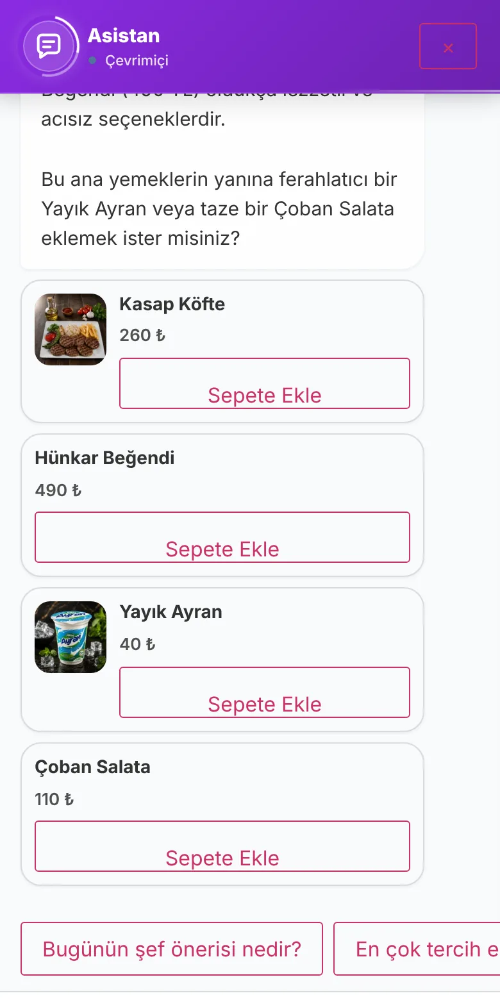

MENÜ ASİSTANIPlus paketinde
Menü sorusu için garson beklenmez.
Menü Asistanı, menünüzdeki ürün ve bilgilere dayanarak soruları yanıtlar ve ürün önerir. Bilmediği soruyu size bırakır.
- Yanıtlar menü verinize dayanır
- Cevaplanamayan sorular listede
- Ekibiniz sohbeti devralabilir

EKSİĞİ GÖRÜN
Menünüzde bunlar yaşanıyorsa, eksik olan bir menü asistanı.
-
BUGÜN YAŞADIĞINIZMenüyle ilgili sorular garsona düşüyor.
MENÜ ASİSTANI İLEAsistan menünüzdeki ürün, fiyat ve açıklamalara dayanarak yanıt verir.
-
BUGÜN YAŞADIĞINIZMisafirin sorduğu ama menüde karşılığı olmayan soruları görmüyorsunuz.
MENÜ ASİSTANI İLEAsistan bilmediğini söyler; bu sorular Cevaplanamayan Sorular listesine düşer, eksik bilgiyi siz eklersiniz.
-
BUGÜN YAŞADIĞINIZİnsan desteği gereken görüşmeler yanıtsız kalıyor.
MENÜ ASİSTANI İLEGeçmiş görüşmeleri inceler, insan desteği gereken görüşmeyi devralıp müşteriyle doğrudan yazışırsınız.
NASIL ÇALIŞIR
Misafirin sorusu garson beklemeden yanıtlanır
-
Misafir menü hakkında soru sorar
Asistan yalnızca sizin menü bilginizle yanıt verir.
- Ürün, fiyat ve açıklamalara dayanır
- Menüdeki ürünleri önerir
- Tükendi işaretli ürün için sipariş oluşturmaz
-
Bilmediği soruları siz görürsünüz
Cevaplanamayan sorular listeye düşer; eksik bilgiyi eklersiniz ya da soruyu tek tıkla Hazır Sorular’a alırsınız.
- Cevaplanamayan Sorular listesi ve tekrar sayısı
- Soruyu tek tıkla Hazır Sorular’a ekleyin
- Sohbet geçmişi ve canlı sohbet
-
Emin değilse garsona bırakır
Menüde bilgisi olmayan soruda yanıt uydurmaz; garson çağırmayı önerir. Gerekirse ekibiniz sohbeti devralır.
- Bilgisi olmayan soruda yanıt uydurmaz
- Garson çağırmayı önerir; talep Servis Paneli’ne düşer
- Sipariş müşterinin açık onayıyla ilerler
TÜM ÖZELLİKLER
Menü Asistanı ile yapabildiğiniz her şey
Aşağıdaki her madde panelde bulunan gerçek bir ayardır. Başlığa dokunup ayrıntısını açın; kendi gözünüzle görmek için canlı menüyü görün.
- 25varsayılan oturum mesaj limiti
- 3servis akışı: garson, hesap, sipariş
Nasıl yanıt verir?
Yalnızca menü ve restoran bilginize dayanır.
- Yanıtlar menünüzdeki ürün, fiyat ve açıklamalara ve restoran bilgilerine dayandırılır
- Menü veya restoran bilgisinde karşılığı olmayan soruda bilmediğini belirtir
- Ürün önerisi
- Tükendi işaretli bir ürün için sipariş oluşturmaz
Servis akışlarıyla birlikte
Garson, hesap ve sipariş aynı sohbetten ilerler.
- Sohbetten garson çağırma ve hesap isteme tetiklenebilir; talepler Servis Paneli’ne düşer
- Sipariş; ürün, adet ve toplam özetiyle ve müşterinin açık onayıyla ilerler
İşletme kontrolü
Görünüm, görünürlük ve sınırları siz belirlersiniz.
- Asistanın adını, karşılama mesajını, simgesini ve renklerini belirlersiniz; müşterinin tek dokunuşla soracağı hazır soruları tanımlarsınız
- Asistanın hangi müşterilere, hangi cihazlarda ve hangi saatlerde gösterileceğini belirlersiniz
- Geçmiş görüşmeleri incelersiniz; insan desteği gereken görüşmeleri devralıp müşteriyle doğrudan yazışırsınız
- Oturum başına mesaj sayısını sınırlar (varsayılan 25) ve yanıtlanmayacak kelimeleri tanımlarsınız; bu kelimeleri içeren mesaja sabit bir yanıt verilir
Yapay zekâ motoru
Bağlantı, sizin girdiğiniz API anahtarıyla kurulur.
- Asistan Google Gemini kullanır
QR Menu Official • İşletmeciler
Kullanan işletmeler ne diyor?
Menü yönetiminde günlük işleyişin nasıl değiştiğini onlardan dinleyin.
SIK SORULAN SORULAR
Aklınıza takılanlar
Cevabı burada bulamazsanız bize yazın; menünüzü birlikte gözden geçirelim.
Menü Asistanı nedir?
Menüdeki ürün ve açıklamalara dayanarak müşterinin sorularını yanıtlayan sohbet asistanıdır. Menü dışı veya veride olmayan konularda sınırlı kalır; cevaplayamadığı sorular raporlanabilir. Menü Asistanı modülü Plus paket kapsamındadır.
Personel sohbeti devralabilir mi?
Evet. Asistan yanıt veremediğinde veya müşteri insan desteği istediğinde personel görüşmeyi devralabilir; böylece tam otomasyon yerine bot + ekip hibrit modeli oluşur.
Menü Asistanı hangi AI altyapısını kullanır?
Yanıtlar Google Gemini API anahtarı tanımlandığında bu servis üzerinden üretilir; anahtar ve model yönetim panelinden yapılandırılır. Menü çevirisi için aynı API kullanılmaz — çeviri ayrı, manuel/CSV sürecindedir.

CANLI DEMO VE PAKETLER
Menü Asistanı, Plus paketinde: işletmenize uygun planı seçin.
Fiyatlar aylık; yıllık ödemede 12 aylık kullanım 10 aylık ücrete denk gelir. Hangisinin size uyduğundan emin değilseniz menünüzü birlikte gözden geçirelim.
- TemelDijital QR menü749 ₺/ayDahil değil
- ProDijital menü ve masa servisi1.490 ₺/ayDahil değil
- PlusMenü, servis ve işletme verisi2.990 ₺/ayDahil
- Aylık üyelikte taahhüt yok, istediğiniz zaman iptal
- İlk 14 gün içinde iade (alan adı ve hosting maliyeti düşülür)
- Yıllık üyelikte kurulum ücreti yok